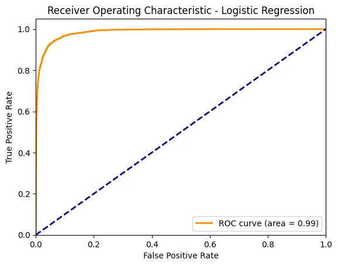
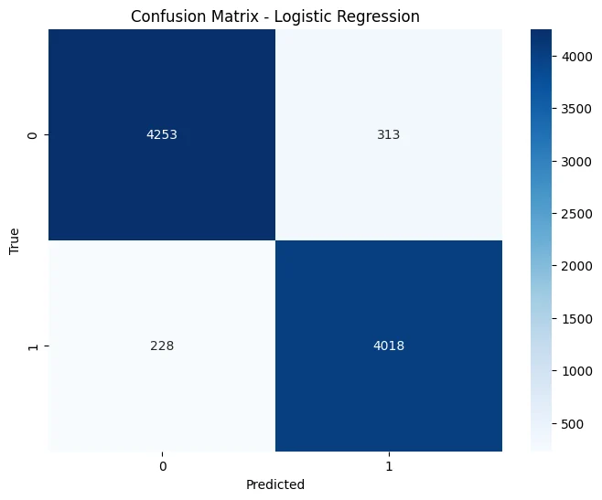
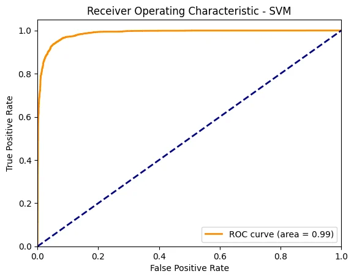
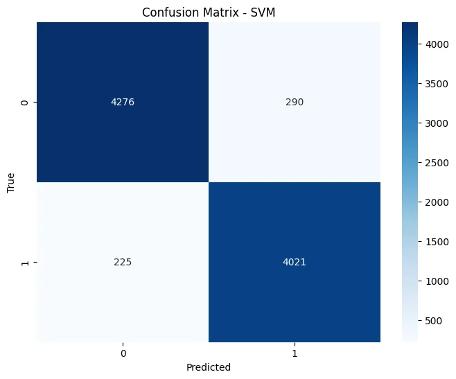
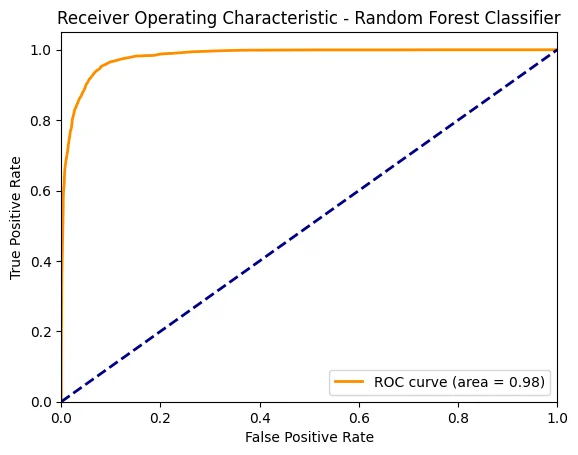
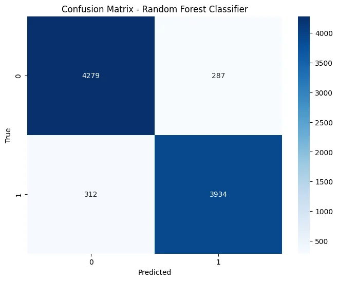
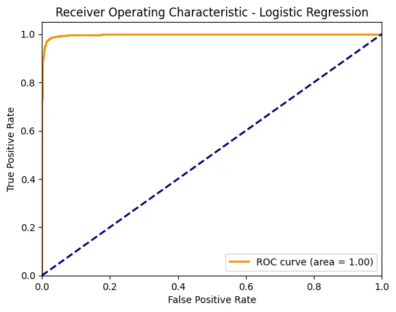
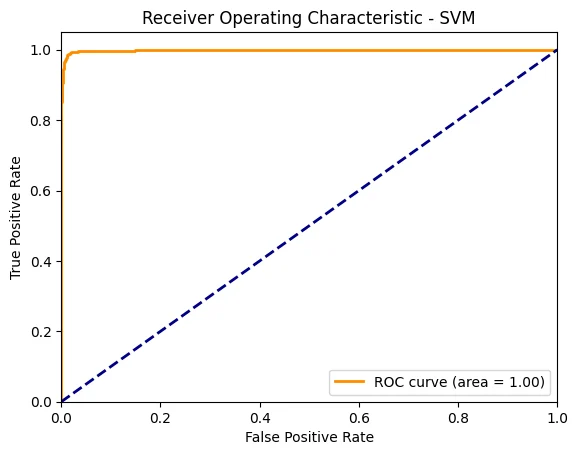
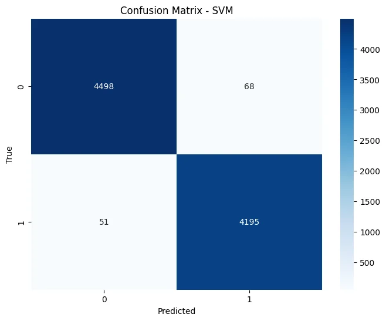
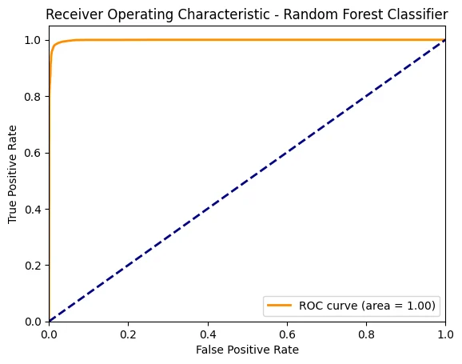

Problem Definition
Problem:
The proliferation of fake news has significant implications, including misleading the public and undermining trust in legitimate news sources. Identifying and categorizing news articles as real or fake is essential for maintaining information integrity.
Objective:
The goal is to build a predictive model to classify news articles as either "Fake" or "True" using Natural Language Processing (NLP) techniques.
Code cell 2
#import
import pandas as pd
import numpy as np
from sklearn.model_selection import train_test_split
from sklearn.feature_extraction.text import TfidfVectorizer
from sklearn.linear_model import LogisticRegression
from sklearn.ensemble import RandomForestClassifier
from sklearn.metrics import accuracy_score, precision_score, recall_score, f1_score, classification_report, roc_auc_score, roc_curve, auc, confusion_matrix
import matplotlib.pyplot as plt
import seaborn as sns
from sklearn.svm import SVC
from scipy.sparse import hstack
Code cell 3
df_clean = pd.read_csv(r'C:\Users\GGPC\IoD_Mini_Projects\Mini_Project_3\data\raw\Clean_columns.csv')Code cell 4
df_clean = df_clean.drop(columns='Unnamed: 0')
df_clean = df_clean.copy()
df_clean| title | text | subject | label | clean_title | clean_text | labelE | |
|---|---|---|---|---|---|---|---|
| 0 | As U.S. budget fight looms, Republicans flip t... | WASHINGTON (Reuters) - The head of a conservat... | politicsNews | 1 | budget fight loom republican flip fiscal script | washington head conservative republican factio... | Human |
| 1 | U.S. military to accept transgender recruits o... | WASHINGTON (Reuters) - Transgender people will... | politicsNews | 1 | military accept transgender recruit monday pen... | washington transgender people allowed first ti... | Human |
| 2 | Senior U.S. Republican senator: 'Let Mr. Muell... | WASHINGTON (Reuters) - The special counsel inv... | politicsNews | 1 | senior republican senator mueller job | washington special counsel investigation link ... | Human |
| 3 | FBI Russia probe helped by Australian diplomat... | WASHINGTON (Reuters) - Trump campaign adviser ... | politicsNews | 1 | fbi russia probe helped australian diplomat nyt | washington trump campaign adviser george papad... | Human |
| 4 | Trump wants Postal Service to charge 'much mor... | SEATTLE/WASHINGTON (Reuters) - President Donal... | politicsNews | 1 | trump want postal service charge amazon shipment | president donald trump called postal service f... | Human |
| ... | ... | ... | ... | ... | ... | ... | ... |
| 44052 | McPain: John McCain Furious That Iran Treated ... | 21st Century Wire says As 21WIRE reported earl... | Middle-east | 0 | mcpain john mccain furious iran treated u sail... | century wire say reported earlier week unlikel... | AI |
| 44053 | JUSTICE? Yahoo Settles E-mail Privacy Class-ac... | 21st Century Wire says It s a familiar theme. ... | Middle-east | 0 | justice yahoo settle privacy lawyer user | century wire say familiar theme whenever dispu... | AI |
| 44054 | Sunnistan: US and Allied ‘Safe Zone’ Plan to T... | Patrick Henningsen 21st Century WireRemember ... | Middle-east | 0 | sunnistan u allied safe zone plan take territo... | patrick henningsen century wireremember obama ... | AI |
| 44055 | How to Blow $700 Million: Al Jazeera America F... | 21st Century Wire says Al Jazeera America will... | Middle-east | 0 | blow million al jazeera america finally call q... | century wire say al jazeera america go history... | AI |
| 44056 | 10 U.S. Navy Sailors Held by Iranian Military ... | 21st Century Wire says As 21WIRE predicted in ... | Middle-east | 0 | navy sailor held iranian military sign neocon ... | century wire say predicted new year look ahead... | AI |
44057 rows × 7 columns
Feature Engineering
Code cell 6
df_clean['clean_text'].isnull().sum()Text output
0
Code cell 7
tfidf_title = TfidfVectorizer(max_features=5000, ngram_range=(1, 2))
tfidf_text = TfidfVectorizer(max_features=10000, ngram_range=(1, 2))
X_title = tfidf_title.fit_transform(df_clean['clean_title'])
X_text = tfidf_text.fit_transform(df_clean['clean_text'])
y = df_clean['label']Code cell 8
X_train_title, X_test_title, y_train_title, y_test_title = train_test_split(X_title, y, test_size=0.2, random_state=1)
X_train_text, X_test_text, y_train_text, y_test_text = train_test_split(X_text, y, test_size=0.2, random_state=1)Code cell 9
def plot_confusion_matrix(y_test, y_test_pred, model_name):
cm = confusion_matrix(y_test, y_test_pred)
plt.figure(figsize=(8, 6))
sns.heatmap(cm, annot=True, fmt='d', cmap='Blues')
plt.xlabel('Predicted')
plt.ylabel('True')
plt.title(f'Confusion Matrix - {model_name}')
plt.show()Code cell 10
def plot_roc_curve(y_test, y_pred_proba, model_name):
fpr, tpr, thresholds = roc_curve(y_test, y_pred_proba)
roc_auc = auc(fpr, tpr)
plt.figure()
plt.plot(fpr, tpr, color='darkorange', lw=2, label='ROC curve (area = %0.2f)' % roc_auc)
plt.plot([0, 1], [0, 1], color='navy', lw=2, linestyle='--')
plt.xlim([0.0, 1.0])
plt.ylim([0.0, 1.05])
plt.xlabel('False Positive Rate')
plt.ylabel('True Positive Rate')
plt.title(f'Receiver Operating Characteristic - {model_name}')
plt.legend(loc="lower right")
plt.show()Defining functions
Code cell 12
def evaluate_model(X_train, y_train, X_test, y_test, model):
model.fit(X_train, y_train)
y_train_pred = model.predict(X_train)
y_test_pred = model.predict(X_test)
train_accuracy = accuracy_score(y_train, y_train_pred)
train_precision = precision_score(y_train, y_train_pred, average='weighted')
train_recall = recall_score(y_train, y_train_pred, average='weighted')
train_f1 = f1_score(y_train, y_train_pred, average='weighted')
test_accuracy = accuracy_score(y_test, y_test_pred)
test_precision = precision_score(y_test, y_test_pred, average='weighted')
test_recall = recall_score(y_test, y_test_pred, average='weighted')
test_f1 = f1_score(y_test, y_test_pred, average='weighted')
test_report = classification_report(y_test, y_test_pred)
test_auc = roc_auc_score(y_test, model.predict_proba(X_test)[:, 1])
return train_accuracy, train_precision, train_recall, train_f1, test_accuracy, test_precision, test_recall, test_f1, test_report, test_aucCode cell 13
models = {
'Logistic Regression': LogisticRegression(max_iter=1000),
'SVM': SVC(kernel= 'linear', probability= True),
'Random Forest Classifier': RandomForestClassifier(n_estimators=100)
}below was without ROC AUC score update to the function
Code cell 15
# for model_name, model in models.items():
# model.fit(X_title_train, y_title_train)
# y_train_pred = model.predict(X_title_train)
# y_test_pred = model.predict(X_title_test)
# model_train_accuracy, model_train_prec, model_train_rec, model_train_f1, model_train_rep = title_evaluate_model(y_title_train, y_train_pred)
# model_test_accuracy, model_test_prec, model_test_rec, model_test_f1, model_test_rep = title_evaluate_model(y_title_test, y_test_pred)
# print(f'Model: {model_name}')
# print(f'Data: Title')
# print('Model performance for Training set')
# print(f'- Train Accuracy: {model_train_accuracy:.4f}')
# print(f'- Train Precision: {model_train_prec:.4f}')
# print(f'- Train Recall: {model_train_rec:.4f}')
# print(f'- Train F1: {model_train_f1:.4f}')
# print(f'- Train Report: \n{model_train_rep}')
# print('Model performance for Test set')
# print(f'- Test Accuracy: {model_test_accuracy:.4f}')
# print(f'- Test Precision: {model_test_prec:.4f}')
# print(f'- Test Recall: {model_test_rec:.4f}')
# print(f'- Test F1: {model_test_f1:.4f}')
# print(f'- Test Report: \n{model_test_rep}')
# print('\n' + '-'*50 + '\n')
# # Create a DataFrame to compare the models
# results = pd.DataFrame({
# 'Model': ['Logistic Regression', 'Random Forest', 'SVM'],
# 'Accuracy': [model_test_accuracy, model_test_prec, model_test_rec],
# 'Precision': [model_train_accuracy, model_train_prec, model_train_rec],
# 'Recall': [model_test_f1, model_test_rep, model_train_rep],
# 'F1 Score': [model_train_f1, model_train_rep, model_train_rep]
# })Updated model evaluation loops for text and title.
Code cell 17
print("Evaluation for Title Features")
for name, model in models.items():
train_acc, train_prec, train_rec, train_f1, test_acc, test_prec, test_rec, test_f1, test_rep, test_auc = evaluate_model(X_train_title, y_train_title, X_test_title, y_test_title, model)
print(f"Model: {name}")
print(f"Train Accuracy: {train_acc:.4f}")
print(f"Train Precision: {train_prec:.4f}")
print(f"Train Recall: {train_rec:.4f}")
print(f"Train F1: {train_f1:.4f}")
print(f"Test Accuracy: {test_acc:.4f}")
print(f"Test Precision: {test_prec:.4f}")
print(f"Test Recall: {test_rec:.4f}")
print(f"Test F1: {test_f1:.4f}")
print(f"Test Report:\n{test_rep}")
print(f"Test AUC: {test_auc:.4f}")
plot_roc_curve(y_test_title, model.predict_proba(X_test_title)[:, 1], name)
plot_confusion_matrix(y_test_title, model.predict(X_test_title), name)
print("-" * 50)
print("Evaluation for Text Features")
for name, model in models.items():
train_acc, train_prec, train_rec, train_f1, test_acc, test_prec, test_rec, test_f1, test_rep, test_auc = evaluate_model(X_train_text, y_train_text, X_test_text, y_test_text, model)
print(f"Model: {name}")
print(f"Train Accuracy: {train_acc:.4f}")
print(f"Train Precision: {train_prec:.4f}")
print(f"Train Recall: {train_rec:.4f}")
print(f"Train F1: {train_f1:.4f}")
print(f"Test Accuracy: {test_acc:.4f}")
print(f"Test Precision: {test_prec:.4f}")
print(f"Test Recall: {test_rec:.4f}")
print(f"Test F1: {test_f1:.4f}")
print(f"Test Report:\n{test_rep}")
print(f"Test AUC: {test_auc:.4f}")
plot_roc_curve(y_test_text, model.predict_proba(X_test_text)[:, 1], name)
plot_confusion_matrix(y_test_text, model.predict(X_test_text), name)
print("-" * 50)









